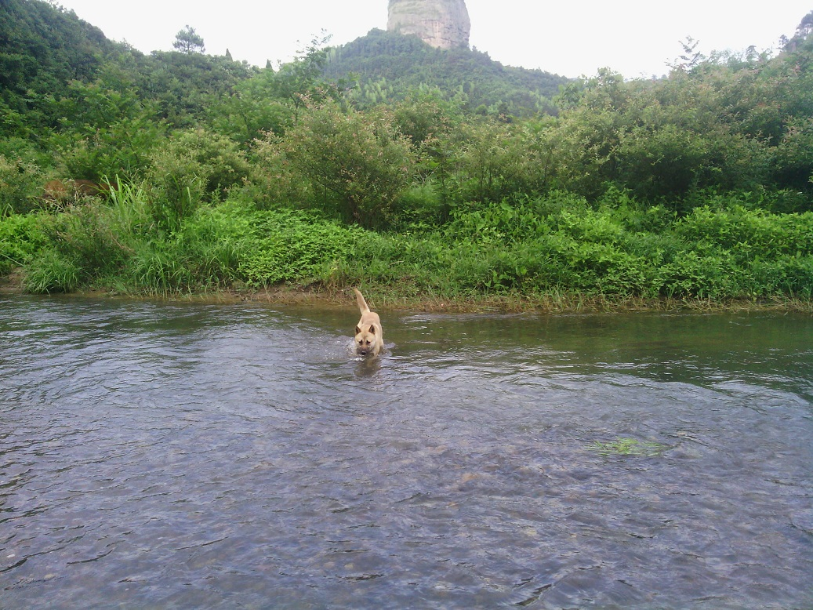

发信人: ddf (ddf), 信区: outdoor
标 题: 崀山风光-一些动物
发信站: 饮水思源 (2013年09月02日20:32:46 星期一)
无事在家放牛，那条狗打酱油的
screen.width - 200){this.width = screen.width - 200}">
过河1
 screen.width - 200){this.width = screen.width - 200}">
过河2
screen.width - 200){this.width = screen.width - 200}">
牛蚊子，也咬人
screen.width - 200){this.width = screen.width - 200}">
练家子
screen.width - 200){this.width = screen.width - 200}">
小鸟
screen.width - 200){this.width = screen.width - 200}">
大汉江山已半入我手
screen.width - 200){this.width = screen.width - 200}">
看家
screen.width - 200){this.width = screen.width - 200}">
screen.width - 200){this.width = screen.width - 200}">
和谐
screen.width - 200){this.width = screen.width - 200}">
知了
screen.width - 200){this.width = screen.width - 200}">
怀孕
screen.width - 200){this.width = screen.width - 200}">
水蛇
screen.width - 200){this.width = screen.width - 200}">
无路可走
screen.width - 200){this.width = screen.width - 200}">
--
※ 来源:·饮水思源 bbs.sjtu.edu.cn·[FROM: 111.186.7.95]
|